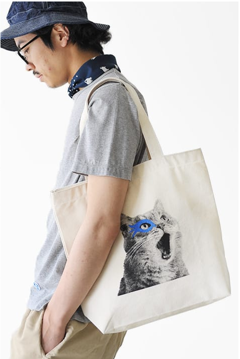

| Home |
|---|
Um Was geht's? Willkommen zu unserer Webseite zum Thema «Stofftaschen vs. Plastiktaschen».Auf dieser Webseite klären wir, was es mit den Jutebeuteln auf sich hat, wie sich diese ökologisch auswirken und wie die jetzigen und zukünftigen Trends aussehen. Dazu vergleichen wir diese mit herkömmlichen Plastiktaschen. |
|
 |